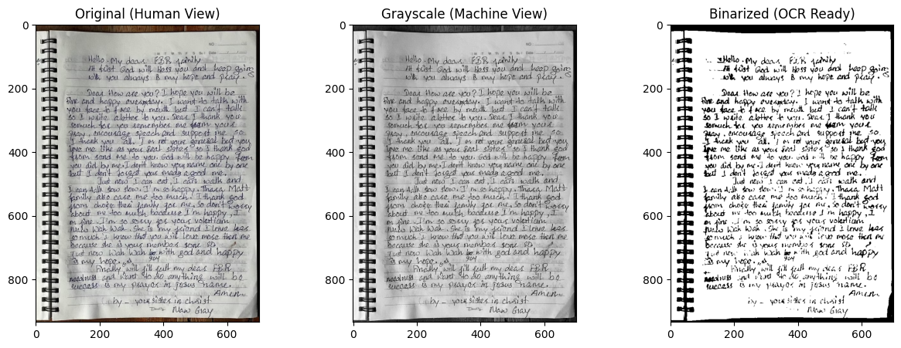

OCR Analysis
This OCR analysis examines three handwritten artifacts in the archive. They include a handwritten letter by Karen medic Naw Gay and two handwritten children’s letters in Burmese. Together, these artifacts test whether AI can reliably recover fragile testimony from conflict when handwriting is uneven, language resources are limited, and human ground truth is not always available.
Artifact Used
The primary artifact is a handwritten letter addressed to the “FBR family.” Written while the author was physically unable to speak, the letter expresses gratitude toward caregivers, reflects on recovery, and mourns the loss of a friend. Two additional handwritten children’s letters in Burmese were also analyzed. These letters were much shorter and visually more difficult. They provided an important second test of OCR performance when no authoritative transcription exists and confidence must be inferred through model agreement rather than direct comparison to a known text.

Why OCR Was Used
OCR was used to test whether machine reading could help recover handwritten testimony for digital archiving. In theory, OCR can accelerate transcription and make fragile texts searchable. In practice, handwritten documents from conflict settings often resist clean extraction because of uneven handwriting, non-standard grammar, image quality issues, multilingual content, and the emotional urgency of the writing situation. These problems became especially visible when comparing the English letter, which could be checked against a manually corrected reference, with the children’s Burmese letters, where no ground truth was available.
Ground Truth Transcription
For the Naw Gay letter, a corrected manual transcription was established as the reference text. Paired with the original artifact, it serves as a human-verified comparison partner against which model outputs can be judged using word error rate (WER) and character error rate (CER). For the two children’s letters, no authoritative transcription was available, so performance was evaluated indirectly through pairwise comparison across model outputs and a consensus-selection method based on model agreement.
Original Artifact

Ground Truth Transcription Used for Comparison
Hello my dear FBR family,
At first, God will bless you and keep going with you always, is my hope and prayer.
Dear, how are you? I hope you will be fine and happy every day. I want to talk with you face to face by mouth but I can’t talk so I write a letter to you. Dear, I thank you so much for you remember me in your prayers, encouraging speech and support me, so I thank you all. I am not your general but you love me like your real sister so I thank God he send me to you. God will be happy for what you did for me. I don’t know your name one by one but I don’t forget you did good for me.
Just now I can eat, I can walk, and I can talk slow slow. I’m so happy. Thara Matt family also care for me too much. I thank God for choose their family for me. So don’t worry about me too much, because I’m happy, I am fine. I’m so sorry for your volunteer Naw Wah Wah. She is my friend, I love her so much. I know you will love her more than me because she is your member gone. Just now Wah Wah stay with God and happy, is my hope.
Finally, God will fill full my dear FBR’s needs and want to do anything be success, is my prayer in Jesus’ name. Amen.
By your sister in Christ,
Naw Gay
Reference-Based OCR Results for the Naw Gay Letter
The English letter provided the strongest OCR test case because a manual reference text could be established. This made it possible to evaluate each model quantitatively rather than relying only on visual judgment. Tesseract produced near-total failure, while Gemini recovered most of the letter’s structure and emotional content. Gemini 3.1 Pro Preview performed best overall.
OCR Outputs for the Naw Gay Letter
| Model | WER | CER | Output Excerpt |
|---|---|---|---|
| Tesseract | 93.28% | 93.28% | dio my deo.a B® peinlly. ale 4aist Teed. vol bloss ot ip a Paei |
| Gemini 2.5 Flash | 32.02% | 12.69% | Hello. My dear FBR family At first God will bless you and keep going |
| Gemini 3.1 Pro Preview | 30.43% | 10.40% | Hello. My dear FBR family At frist God will bless you and keep going |
Image Description and Metadata Assistance
Gemini was also prompted to describe the handwritten letter as an image artifact rather than only transcribe its text. In that mode, it successfully identified the lined spiral notebook page, the handwritten English text, the emotional themes of gratitude, recovery, and loss, and likely archival tags such as personal correspondence, humanitarian aid, prayer, resilience, and grief. This was useful for metadata generation, but it also showed the risk of interpretive overreach. Some contextual inferences, such as the reference to Free Burma Rangers and the implications of Wah Wah’s death, were plausible and helpful, but still required human review before being treated as archival fact.
OCR Analysis of Children’s Letter 1
The first handwritten children’s letter presented a much harder OCR problem. Tesseract failed completely, producing no usable output. Gemini 2.5 Flash, Gemini 3.1 Pro without a language hint, and Gemini 3.1 Pro with forced Burmese all produced different Burmese outputs, but they disagreed sharply with one another. Because no human transcription was available, reliability had to be inferred indirectly by comparing how closely the models agreed.
| Model Comparison | Pairwise WER | Pairwise CER | Interpretation |
|---|---|---|---|
| Gemini 2.5 Flash vs Gemini 3.1 Pro (No Language Hint) | 1.0000 | 1.1371 | High disagreement |
| Gemini 2.5 Flash vs Gemini 3.1 Pro (Forced Burmese) | 2.0000 | 1.8468 | Very high disagreement |
| Gemini 3.1 Pro (No Language Hint) vs Gemini 3.1 Pro (Forced Burmese) | 4.0000 | 1.3293 | Extreme disagreement |
A consensus-selection method was then used to identify the most central machine transcription by choosing the output with the lowest total CER distance from the other usable outputs. For Letter 1, that method selected Gemini 3.1 Pro with forced Burmese, with a total CER distance of 1.5606. However, the disagreement across all usable outputs remained high enough that this consensus text should still be treated as provisional rather than trustworthy ground truth. In archival terms, the most important result is not the content of the selected transcription but the instability of the OCR process itself.
OCR Analysis of Children’s Letter 2
The second handwritten children’s letter produced a different result. Tesseract again performed poorly, but the Gemini outputs converged much more strongly. Gemini 3.1 Pro without a language hint and Gemini 3.1 Pro with forced Burmese were nearly identical, indicating that the letter was much more stable under OCR than Letter 1.
| Model Comparison | Pairwise WER | Pairwise CER | Interpretation |
|---|---|---|---|
| Tesseract vs Gemini 3.1 Pro (No Language Hint) | 1.0000 | 1.1329 | Tesseract outlier |
| Gemini 2.5 Flash vs Gemini 3.1 Pro (No Language Hint) | 1.0000 | 0.3097 | Moderate disagreement |
| Gemini 3.1 Pro (No Language Hint) vs Gemini 3.1 Pro (Forced Burmese) | 0.1429 | 0.0111 | Near-identical output |
Using the same medoid-based consensus method, Letter 2 selected Gemini 3.1 Pro without a language hint as the consensus transcription, with a total CER distance of 1.1778. Unlike Letter 1, this result is supported by strong model convergence, especially within the Gemini 3.1 variants. That does not prove correctness, but it provides a more defensible machine-readable transcription for archival reference.
Best Performer
Across all handwritten artifacts, Gemini clearly outperformed Tesseract. For the Naw Gay letter, Gemini 3.1 Pro Preview produced the lowest WER and CER and recovered substantially more of the letter’s structure, vocabulary, and emotional content than Tesseract. For the children’s letters, Gemini also produced the only usable Burmese outputs. However, the children’s letters showed that better output does not always mean stable or reliable output. One letter remained highly unstable across Gemini variants, while the other showed strong convergence and therefore higher confidence.
Interpretation
The OCR results show that model choice matters enormously when working with handwritten humanitarian testimony. A weak OCR result does not merely introduce small errors. It can obscure the emotional logic of a document and erase key elements such as gratitude, bodily recovery, mourning, or fear. In the Naw Gay letter, Gemini made the text far more legible than Tesseract, but human correction remained essential.
The children’s letters reveal a second archival problem. Sometimes no human transcription exists, so accuracy cannot be measured directly. In that situation, agreement across model variants becomes a proxy for confidence. High agreement suggests a more stable machine reading, while high disagreement signals that the transcription should be treated cautiously. Letter 1 showed no stable machine-readable consensus. Letter 2 showed strong convergence among Gemini outputs and much weaker convergence with Tesseract.
This matters for the archive because machine readability is not the same as archival recovery. OCR can assist in making testimony searchable and analyzable, but it cannot be treated as a neutral or complete extraction process. The most responsible workflow uses layered steps. Start with OCR draft text, compare outputs across models when possible, establish ground truth where it exists, and mark uncertainty explicitly where it does not.
Conclusion
For this archive, OCR is useful as a support tool rather than a replacement for transcription. The Naw Gay letter demonstrates that AI can help recover fragile handwritten testimony when a human can verify and correct the results. The children’s letters show that when no ground truth exists, OCR can still provide provisional access, but only if uncertainty is documented and model agreement is used as a confidence check. OCR is therefore valuable for archival workflows, but not yet reliable enough to be trusted without human oversight.
Once text has been recovered through OCR and manually corrected, it becomes machine-readable data that can support additional computational analysis. In this project, the corrected transcription was later used for sentiment analysis to examine how expressions of gratitude, grief, faith, and recovery appear across the testimony. See the Sentiment Analysis section for further analysis built from this digitized text.